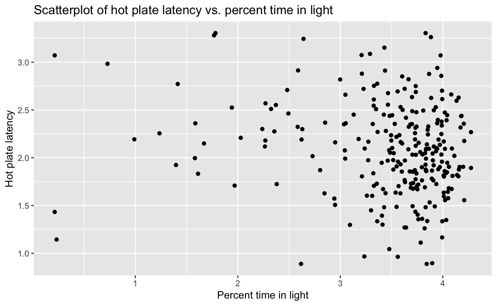
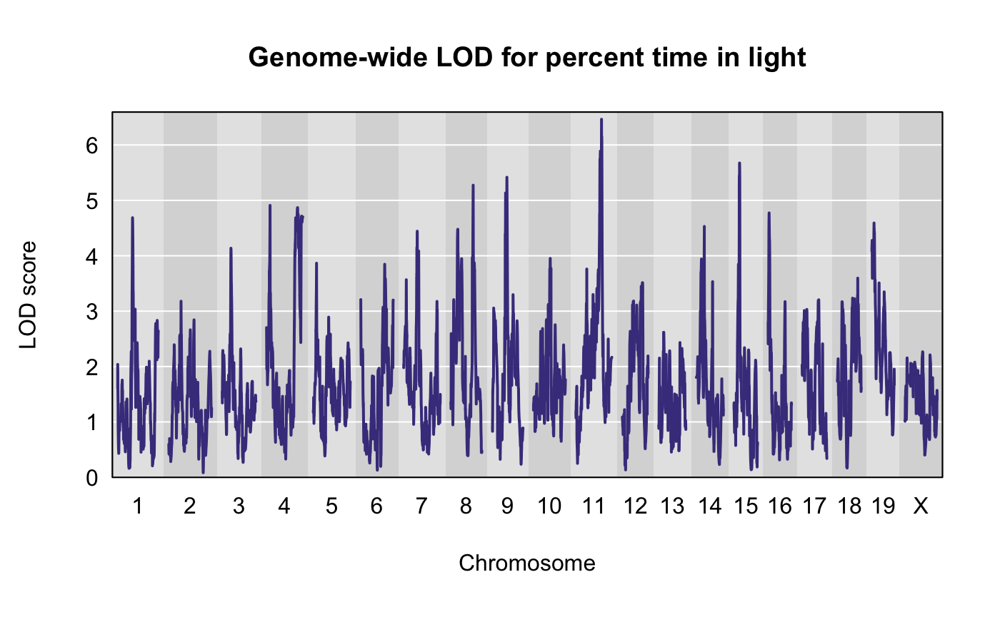
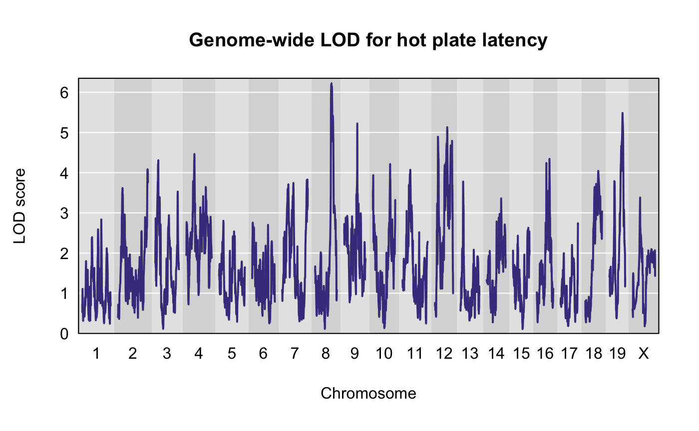
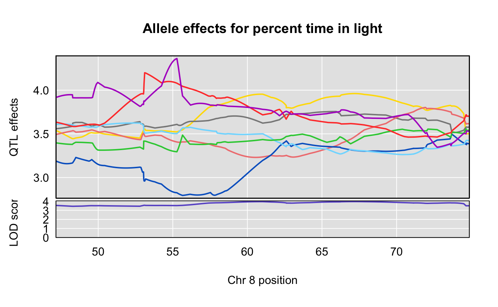
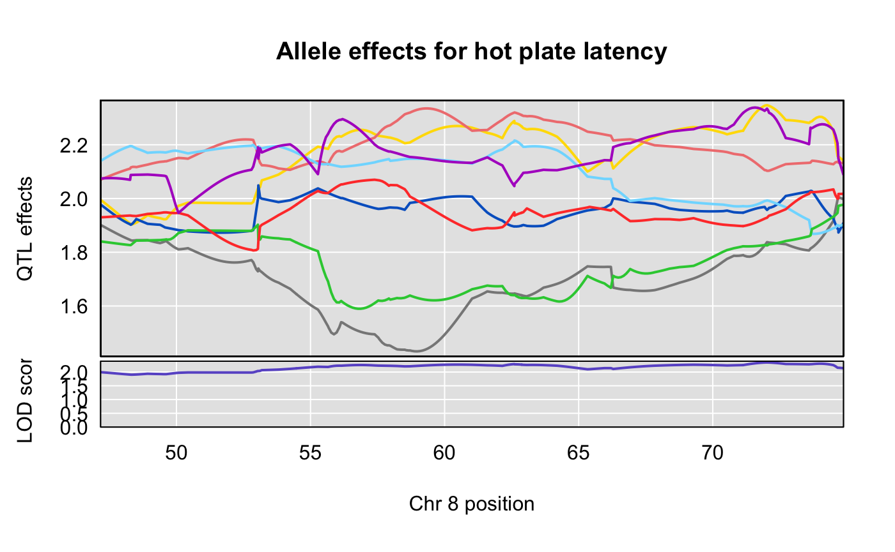

##
## Attaching package: 'dplyr'## The following objects are masked from 'package:stats':
##
## filter, lag## The following objects are masked from 'package:base':
##
## intersect, setdiff, setequal, unionqtl2data github repositoryfile <- paste0("https://raw.githubusercontent.com/rqtl/",
"qtl2data/master/DO_Recla/recla.zip")
recla <- read_cross2(file)
# make sex a covariate for use in qtl2pleio::scan_pvl
recla[[6]][ , 1, drop = FALSE] -> sex
# insert pseudomarkers
insert_pseudomarkers(recla, step = 0.10) -> pseudomap
gm <- pseudomap$`8`We now convert the genotype probabilities to haplotype dosages.
We now calculate kinship matrices, by the “leave one chromosome out (loco)” method.
recla$pheno -> ph
log(ph) -> lph
apply(FUN = broman::winsorize, X = lph, MARGIN = 2) -> wlph
#colnames(wlph)[c(7, 10, 22)] <- c("distance traveled in light", "percent time in light", "hot plate latency")
as_tibble(wlph) -> wlph_tibWe next perform the univariate QTL scan for our phenotypes.
sex2 <- matrix(as.numeric(sex == "female"), ncol = 1)
colnames(sex2) <- "female"
rownames(sex2) <- rownames(aprobs[[1]])
out <- scan1(genoprobs = aprobs, pheno = wlph, kinship = kinship, addcovar = sex2, reml = TRUE)Let’s find the univariate QTL peaks for all phenotypes.
We want to look closely at those peaks on Chromosome 8. We’ll save the positions of peaks for our two traits of interest.
## lodcolumn chr pos lod
## 1 bw 1 23.9075 5.471580
## 2 OF_distance_first4 1 43.2385 5.772977
## 3 LD_transitions 1 95.8075 5.028258
## 4 OF_distance 2 49.9770 5.544458
## 5 bw 2 52.3932 7.352334
## 6 OF_immobile_pct 2 53.2646 9.771813
## 7 VC_bottom_distance_first4 2 71.0160 6.531654
## 8 OF_distance_first4 3 10.7360 5.541166
## 9 VC_bottom_distance_first4 3 16.3700 5.518637
## 10 VC_top_time_pct 3 17.9390 5.951067
## 11 LD_distance_light 3 23.4390 5.203246
## 12 bw 3 24.8390 5.632714
## 13 VC_top_time_first4 3 48.1280 6.144073
## 14 VC_top_velocity 3 48.5630 6.264824
## 15 VC_top_time_first4 4 3.5340 5.016970
## 16 OF_corner_pct 4 9.0111 6.272996
## 17 OF_immobile_pct 4 37.5206 5.529985
## 18 LD_distance_light 4 71.2992 5.040185
## 19 bw 5 10.0740 5.728865
## 20 VC_bottom_distance_first4 5 19.9741 5.419061
## 21 VC_top_time_first4 5 20.0741 6.075282
## 22 VC_bottom_distance 5 20.5930 5.691913
## 23 VC_bottom_time_pct 5 20.5930 6.360001
## 24 TS_latency_immobile 5 43.3504 5.995115
## 25 OF_corner_pct 5 64.2551 5.665658
## 26 OF_immobile_pct 6 53.4292 6.968771
## 27 TS_frequency_climbing 6 57.0362 5.361091
## 28 bw 7 9.1778 6.057098
## 29 TS_time_immobile 7 49.4778 8.067612
## 30 VC_bottom_distance 7 54.5591 5.011113
## 31 OF_distance_first4 7 57.9454 5.327302
## 32 VC_top_distance 7 83.8778 5.724788
## 33 OF_immobile_pct 7 83.9778 5.823556
## 34 TS_frequency_climbing 8 48.1732 5.483064
## 35 LD_distance_light 8 55.2762 5.323391
## 36 LD_light_pct 8 55.2762 5.274185
## 37 HP_latency 8 57.7732 6.223739
## 38 LD_distance_light 9 36.6965 5.196968
## 39 LD_light_pct 9 36.6965 5.417419
## 40 VC_top_time_first4 9 38.4834 5.109813
## 41 VC_top_time_pct 9 39.2680 6.356432
## 42 HP_latency 9 46.8502 5.222074
## 43 bw 10 3.7781 6.526199
## 44 OF_distance_first4 10 29.6698 5.462975
## 45 VC_bottom_time_pct 10 32.5438 5.432804
## 46 OF_periphery_pct 10 74.8530 5.246487
## 47 VC_top_distance 11 7.8200 6.245803
## 48 VC_top_distance_first4 11 11.6236 5.486915
## 49 VC_bottom_distance_first4 11 54.3420 5.367052
## 50 LD_transitions 11 58.9000 5.903217
## 51 VC_bottom_transitions 11 60.5984 5.114051
## 52 LD_light_pct 11 63.3943 6.464176
## 53 LD_distance_light 11 63.4514 6.373437
## 54 VC_top_time_pct 12 20.5776 6.950144
## 55 VC_bottom_velocity 12 21.7760 5.653292
## 56 OF_center_pct 12 35.5140 6.399422
## 57 HP_latency 12 43.5150 5.131074
## 58 OF_periphery_pct 12 53.5776 7.240951
## 59 OF_corner_pct 13 59.7966 6.594594
## 60 VC_bottom_time_first4 14 11.9183 5.204369
## 61 VC_bottom_distance_first4 14 12.5316 5.763233
## 62 VC_bottom_transitions 14 12.5316 6.478533
## 63 VC_top_velocity 14 12.7819 6.840412
## 64 VC_bottom_distance 14 14.5316 5.592030
## 65 TS_frequency_climbing 14 21.1141 5.372594
## 66 OF_center_pct 14 53.7316 5.377182
## 67 TS_frequency_climbing 15 12.6680 6.043265
## 68 LD_light_pct 15 15.2374 5.674922
## 69 OF_distance_first4 16 23.2656 5.242101
## 70 VC_top_distance 17 15.6390 6.669275
## 71 VC_top_velocity 18 8.3750 5.558628
## 72 VC_top_time_first4 18 17.8068 6.246206
## 73 LD_transitions 18 37.4182 5.090332
## 74 VC_bottom_distance_first4 19 24.9615 7.362557
## 75 VC_bottom_time_first4 19 24.9615 7.499959
## 76 OF_immobile_pct 19 31.9505 5.639812
## 77 HP_latency 19 47.7977 5.485000Given that the two traits “percent time in light” and “distance traveled in light” share a peak, we want to ask how correlated they are.
## [1] 0.8859402## [1] -0.1507317## [1] -0.143598We create a scatter plot for the two phenotypes.
scatter1022 <- ggplot() + geom_point(data = wlph_tib, aes(y = HP_latency, x = LD_light_pct)) + labs(x = "Percent time in light", y = "Hot plate latency") + ggtitle("Scatterplot of hot plate latency vs. percent time in light")
scatter1022## Warning: Removed 3 rows containing missing values (geom_point).
Let’s plot the results of the univariate QTL scans for our two traits.


We examine the allele effects plots for our two traits, in the region of interest on Chromosome 8.
scan1coef(aprobs[ , 8], pheno = wlph[, 10], kinship = kinship$`8`,
reml = TRUE,
addcovar = sex2) -> s1c_10
scan1coef(aprobs[ , 8], pheno = wlph[, 22], kinship = kinship$`8`,
reml = TRUE,
addcovar = sex2) -> s1c_22# subset scan1output objects
s1c_10s <- s1c_10[650:999, ] # 650:999 is the same as the interval for the two-dimensional scan.
s1c_22s <- s1c_22[650:999, ]plot_coefCC(s1c_10s, map = pseudomap, main = "Allele effects for percent time in light", scan1_output = s1c_10s)
plot_coefCC(s1c_22s, map = pseudomap, main = "Allele effects for hot plate latency", scan1_output = s1c_22s)
We present the code that we ran to perform the two-dimensional scan.
scan_pvl(probs = pp, pheno = wlph[, c(10, 22)], covariates = sex2, kinship = kinship$`8`, start_snp1 = 650, n_snp = 350) -> pvl1022
write.table(x = pvl1022, file = "recla-10-22.txt")To save computing time, we read the two-dimensional scan results from github.
as_tibble(read.table("https://raw.githubusercontent.com/fboehm/qtl2pleio-manuscript/master/Rmd/recla-10-22.txt")) -> pvl1022We then calculate the likelihood ratio test statistic.
## [1] 2.771408We create a profile LOD plot.
colnames(recla$pheno)[c(10, 22)] <- c("Percent time in light", "Hot plate latency")
p1022 <- tidy_scan_pvl(pvl1022, pmap = gm) %>%
add_intercepts(c(as.numeric(pos_LD_light_pct), as.numeric(pos_HP_latency))) %>%
plot_pvl(phenames = colnames(recla$pheno)[c(10, 22)]) + ggtitle("Chromosome 8 profile LOD for percent time in light and hot plate latency") ## Warning: Column `marker1`/`marker` joining factor and character vector,
## coercing into character vector## Warning: Column `marker2`/`marker` joining factor and character vector,
## coercing into character vectorFirst, we find the pleiotropy peak marker. This is the marker for which the log likelihood is maximized under the constraint of pleiotropy.
## loglik139
## 788To save computing time, we read the bootstrap results files from Github. For details of how we performed the bootstrap analyses on the University of Wisconsin-Madison Center for High-Throughput Computing, please see the documentation in the qtl2pleio-manuscript repository: https://github.com/fboehm/qtl2pleio-manuscript.
The code below creates a temporary directory “tmp” in the user’s working directory. We then download a gzipped tar file that contains 1000 text files. Each text file contains a single likelihood ratio test statistic from a bootstrap sample.
gz_file <- "https://raw.githubusercontent.com/fboehm/qtl2pleio-manuscript/master/chtc/Recla-bootstrap/submit_files/recla-boot-run561.tar.gz"
tmp_dir <- file.path(getwd(), "tmp")
dir.create(tmp_dir)
download.file(gz_file, destfile = file.path(tmp_dir, "recla-boot-run561.tar.gz"))
untar(file.path(tmp_dir, "recla-boot-run561.tar.gz"), exdir = tmp_dir)
## read boot lrt files
boot_lrt <- list()
for (i in 1:1000){
n <- i - 1
fn <- paste0("recla-boot-run561_", n, ".txt")
boot_lrt[i] <- read.table(file.path(tmp_dir, fn))
}
# convert list to numeric vector
boot_lrt <- unlist(boot_lrt)
# delete tmp_dir and its contents
unlink(tmp_dir, recursive = TRUE)We get a bootstrap p-value by comparing the above vector’s values to mylrt, the test statistic for the observed data.
## [1] 0.109## ─ Session info ──────────────────────────────────────────────────────────
## setting value
## version R version 3.5.1 (2018-07-02)
## os macOS 10.14.1
## system x86_64, darwin15.6.0
## ui X11
## language (EN)
## collate en_US.UTF-8
## ctype en_US.UTF-8
## tz America/Chicago
## date 2018-11-21
##
## ─ Packages ──────────────────────────────────────────────────────────────
## package * version date lib source
## assertthat 0.2.0 2017-04-11 [1] CRAN (R 3.5.0)
## backports 1.1.2 2017-12-13 [1] CRAN (R 3.5.0)
## base64enc 0.1-3 2015-07-28 [1] CRAN (R 3.5.0)
## bindr 0.1.1 2018-03-13 [1] CRAN (R 3.5.0)
## bindrcpp * 0.2.2 2018-03-29 [1] CRAN (R 3.5.0)
## bit 1.1-14 2018-05-29 [1] CRAN (R 3.5.0)
## bit64 0.9-7 2017-05-08 [1] CRAN (R 3.5.0)
## blob 1.1.1 2018-03-25 [1] CRAN (R 3.5.0)
## broman 0.68-2 2018-07-25 [1] CRAN (R 3.5.0)
## callr 3.0.0 2018-08-24 [1] CRAN (R 3.5.0)
## cli 1.0.1 2018-09-25 [1] CRAN (R 3.5.0)
## colorspace 1.3-2 2016-12-14 [1] CRAN (R 3.5.0)
## commonmark 1.6 2018-09-30 [1] CRAN (R 3.5.0)
## crayon 1.3.4 2017-09-16 [1] CRAN (R 3.5.0)
## data.table 1.11.8 2018-09-30 [1] CRAN (R 3.5.0)
## DBI 1.0.0 2018-05-02 [1] CRAN (R 3.5.0)
## desc 1.2.0 2018-05-01 [1] CRAN (R 3.5.0)
## devtools 2.0.1 2018-10-26 [1] CRAN (R 3.5.1)
## digest 0.6.18 2018-10-10 [1] CRAN (R 3.5.0)
## dplyr * 0.7.8 2018-11-10 [1] CRAN (R 3.5.0)
## evaluate 0.12 2018-10-09 [1] CRAN (R 3.5.0)
## fs 1.2.6 2018-08-23 [1] CRAN (R 3.5.0)
## ggplot2 * 3.1.0 2018-10-25 [1] CRAN (R 3.5.0)
## glue 1.3.0 2018-07-17 [1] CRAN (R 3.5.0)
## gtable 0.2.0 2016-02-26 [1] CRAN (R 3.5.0)
## htmltools 0.3.6 2017-04-28 [1] CRAN (R 3.5.0)
## jsonlite 1.5 2017-06-01 [1] CRAN (R 3.5.0)
## knitr 1.20 2018-02-20 [1] CRAN (R 3.5.0)
## labeling 0.3 2014-08-23 [1] CRAN (R 3.5.0)
## lazyeval 0.2.1 2017-10-29 [1] CRAN (R 3.5.0)
## magrittr 1.5 2014-11-22 [1] CRAN (R 3.5.0)
## MASS 7.3-50 2018-04-30 [1] CRAN (R 3.5.1)
## memoise 1.1.0 2017-04-21 [1] CRAN (R 3.5.0)
## munsell 0.5.0 2018-06-12 [1] CRAN (R 3.5.0)
## pillar 1.3.0 2018-07-14 [1] CRAN (R 3.5.0)
## pkgbuild 1.0.2 2018-10-16 [1] CRAN (R 3.5.0)
## pkgconfig 2.0.2 2018-08-16 [1] CRAN (R 3.5.0)
## pkgdown 1.2.0.9000 2018-11-21 [1] Github (hadley/pkgdown@44460e6)
## pkgload 1.0.2 2018-10-29 [1] CRAN (R 3.5.0)
## plyr 1.8.4 2016-06-08 [1] CRAN (R 3.5.0)
## prettyunits 1.0.2 2015-07-13 [1] CRAN (R 3.5.0)
## processx 3.2.0 2018-08-16 [1] CRAN (R 3.5.0)
## ps 1.2.1 2018-11-06 [1] CRAN (R 3.5.0)
## purrr 0.2.5 2018-05-29 [1] CRAN (R 3.5.0)
## qtl2 * 0.17-9 2018-11-18 [1] Github (rqtl/qtl2@1c007a2)
## qtl2pleio * 0.1.2.9000 2018-11-21 [1] local
## R6 2.3.0 2018-10-04 [1] CRAN (R 3.5.0)
## Rcpp 1.0.0.1 2018-11-18 [1] Github (RcppCore/Rcpp@4f168e6)
## remotes 2.0.2 2018-10-30 [1] CRAN (R 3.5.0)
## rlang 0.3.0.1 2018-10-25 [1] CRAN (R 3.5.0)
## rmarkdown 1.10 2018-06-11 [1] CRAN (R 3.5.0)
## roxygen2 6.1.1 2018-11-07 [1] CRAN (R 3.5.0)
## rprojroot 1.3-2 2018-01-03 [1] CRAN (R 3.5.0)
## RSQLite 2.1.1 2018-05-06 [1] CRAN (R 3.5.0)
## rstudioapi 0.8 2018-10-02 [1] CRAN (R 3.5.0)
## scales 1.0.0 2018-08-09 [1] CRAN (R 3.5.0)
## sessioninfo 1.1.1 2018-11-05 [1] CRAN (R 3.5.0)
## stringi 1.2.4 2018-07-20 [1] CRAN (R 3.5.0)
## stringr 1.3.1 2018-05-10 [1] CRAN (R 3.5.0)
## testthat 2.0.1 2018-10-13 [1] CRAN (R 3.5.0)
## tibble 1.4.2 2018-01-22 [1] CRAN (R 3.5.0)
## tidyselect 0.2.5 2018-10-11 [1] CRAN (R 3.5.0)
## usethis 1.4.0 2018-08-14 [1] CRAN (R 3.5.0)
## withr 2.1.2 2018-03-15 [1] CRAN (R 3.5.0)
## xml2 1.2.0 2018-01-24 [1] CRAN (R 3.5.0)
## yaml 2.2.0 2018-07-25 [1] CRAN (R 3.5.0)
##
## [1] /Library/Frameworks/R.framework/Versions/3.5/Resources/library